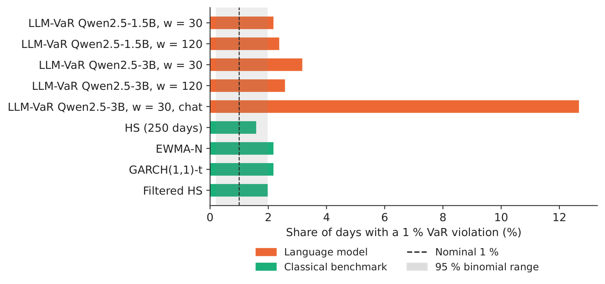
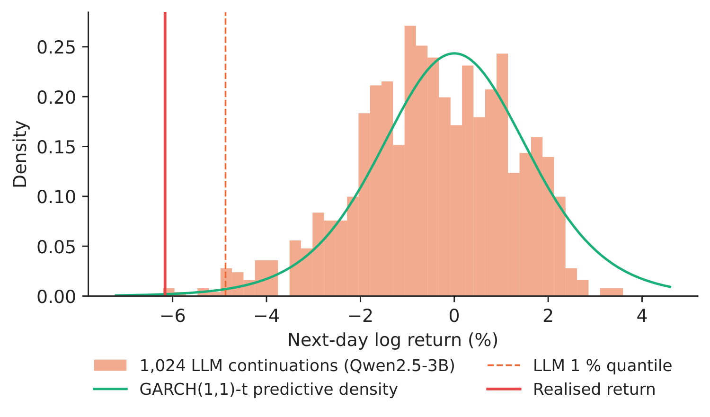
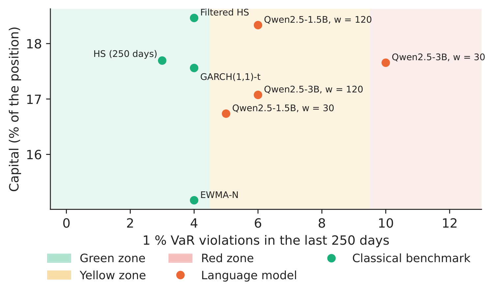
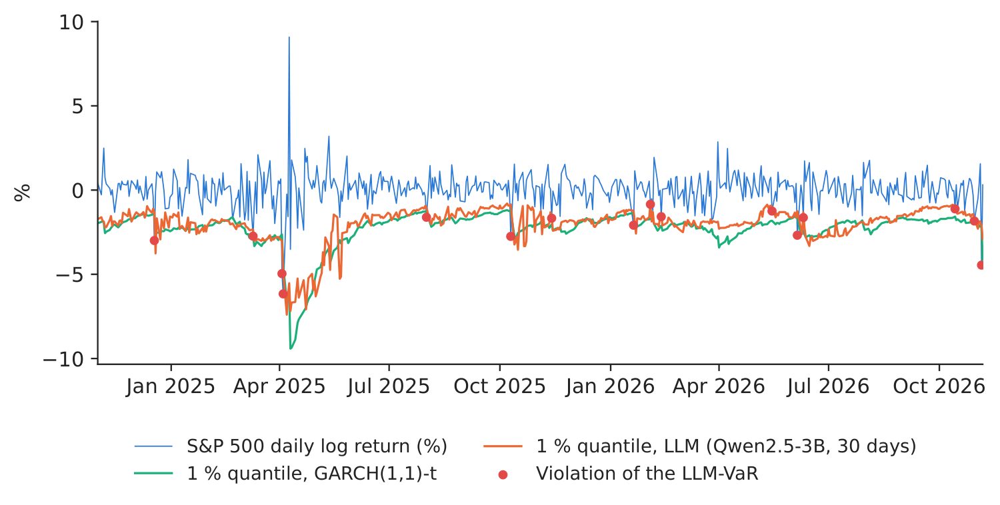

Case study 5 · Lecture 12
LLM-VaR and LLM-ES — can a language model measure market risk?
Prof. dr. Daniel Traian PELE
Bucharest University of Economic Studies, Department of Statistics and Econometrics
Romanian Academy, Institute for Economic Forecasting
The paper
Pele, D. T., Bolovăneanu, V., Lin, M.-B., Ren, R., Ginavar, A. T., Spilak, B., Andrei, A.-V., Toma, F.-M., Lessmann, S. & Härdle, W. K. (2026). In the beginning was the Word: LLM-VaR and LLM-ES. Expert Systems with Applications, 295, 128676. doi:10.1016/j.eswa.2025.128676
Materials
The business question
The market-risk desk of a bank holds a long position in the S&P 500. Every evening it must report the Value-at-Risk (VaR), the loss that tomorrow should exceed only with probability 1 %, and the Expected Shortfall (ES), the average loss on the days when it does. The supervisor checks the VaR against the realised losses every quarter; too many violations raise the capital the bank must hold. A vendor now offers a “risk assistant” built on a large language model (LLM): it reads the recent returns as text and writes the risk numbers, with no model to estimate. The head of market risk asks: would such a model pass the regulatory backtest, and what would it do to our capital?
What the paper did
Question. Can general-purpose LLMs, used zero-shot, forecast the VaR and the ES of financial returns as well as the econometric risk models used in practice?
Design. The paper defines two new risk measures, LLM-VaR and LLM-ES, on the input encoding of the LLMTime framework (Gruver et al., 2023): a window of the last \(w\) daily log returns is written as a string of numbers, the LLM continues it, and many sampled continuations give a forecast distribution of tomorrow's return. Three generations of generative pre-trained transformers (GPT) are evaluated — GPT-3.5, GPT-4 and GPT-4o — on daily data for nine assets (a cryptocurrency index, equity indices including the S&P 500, a clean-energy index, a United States (US) Treasury bond fund and a commodity index), with rolling windows of 30 to 150 days. The benchmarks are GARCH (generalised autoregressive conditional heteroskedasticity) with Student-\(t\) innovations and EWMA (exponentially weighted moving average) models with Dynamic Conditional Score (DCS) volatility. The forecasts are backtested at 1 % for VaR and 2.5 % for ES with the Basel traffic light, the Kupiec and Christoffersen tests and the Acerbi–Székely tests for ES.
Main findings of the paper.
- “LLMs perform well when short rolling windows are used, particularly in volatile markets like cryptocurrencies” (abstract).
- “GPT-3.5 frequently outperforms or matches the performance of newer models, raising questions about model complexity, alignment, and biases” (abstract).
- With longer windows the performance of the LLMs deteriorates and “the econometric models prove more reliable” (abstract); the paper contributes “a first-of-its-kind benchmark for LLM-based VaR/ES estimation” and shows the potential of general-purpose LLMs as adaptive tools for short-horizon risk assessment.
Related work of our group for Lecture 12 and Lecture 13: time-series foundation models for VaR and ES with conformal calibration in Central and Eastern European markets (Jheng, Tak, Găman, Mazurencu-Marinescu-Pele & Pele, 2026, Economic Computation and Economic Cybernetics Studies and Research 60(2), 267–290, doi:10.24818/18423264/60.2.26.14; Case 6).
The method, step by step
Intuition first
A language model has read a great deal of text with numbers in it. Shown a list of recent returns, it can be asked to “write the next number” many times; each answer is one possible tomorrow. If the answers are as spread out as real returns, their worst 1 % is a VaR. The question is empirical: does the model reproduce the tails of the market, or only its typical day?
Let \(r_t=100\ln(P_t/P_{t-1})\) be the daily log return in percent and \(\mathcal X_{t-1}=(r_{t-w},\dots,r_{t-1})\) the window. LLMTime rescales the window, \(z_s=(r_s-m)/c\) with \(m=\min\mathcal X-\beta(\max\mathcal X-\min\mathcal X)\) and \(c\) the \(a\)-quantile of \(r_s-m\) (\(\beta=0.3\), \(a=0.95\)), and writes each \(z_s\) with two decimals and no decimal point, separated by commas. The LLM with parameters \(\Theta\) samples \(n\) continuations at temperature \(T\), which give simulated returns \(\hat r^{(i)}_t=m+c\,\hat z^{(i)}_t\), \(i=1,\dots,n\), and the empirical distribution \(\hat F_t\). The paper defines
Backtests. With the violation indicator \(I_t=\mathbf{1}\{r_t<-\mathrm{VaR}_t\}\), \(n_1=\sum I_t\) violations in \(N\) days and \(\hat\pi=n_1/N\), the Kupiec unconditional-coverage statistic is \(LR_{uc}=-2\ln\frac{(1-\alpha)^{N-n_1}\alpha^{n_1}}{(1-\hat\pi)^{N-n_1}\hat\pi^{n_1}}\sim\chi^2_1\); the Christoffersen independence statistic \(LR_{ind}\sim\chi^2_1\) compares a first-order Markov chain for \(I_t\) with independence, and \(LR_{cc}=LR_{uc}+LR_{ind}\sim\chi^2_2\). Scores. The quantile (tick) loss \(S_Q=(\alpha-I_t)(r_t-q_t)\), with \(q_t=-\mathrm{VaR}_t\), and the FZ0 loss of Fissler and Ziegel, in the form of Patton, Ziegel and Chen (2019), for the pair \((q_t,e_t)\), \(e_t=-\mathrm{ES}_t\): \(S_{FZ0}=-\frac{1}{\alpha e_t}I_t(q_t-r_t)+\frac{q_t}{e_t}+\ln(-e_t)-1\); both are minimised in expectation by the true quantile and ES, so lower average loss is better. Two models are compared with the Diebold–Mariano (DM) statistic \(DM=\bar d/\sqrt{\hat V(\bar d)}\) on the loss differences \(d_t\), with a Newey–West variance. Benchmark. GARCH(1,1)-\(t\): \(r_t=\mu+\sigma_t\varepsilon_t\), \(\sigma_t^2=\omega+\alpha_1(r_{t-1}-\mu)^2+\beta_1\sigma_{t-1}^2\), \(\varepsilon_t\) a standardised Student-\(t\) with \(\nu\) degrees of freedom.
In practice
Judge a risk model by its backtest, not by its architecture: count the violations, test their frequency and clustering, and compare the joint VaR–ES loss with a GARCH benchmark before any number reaches the risk report.
Replicate it yourself
Notebook C5_notebook_EN.ipynb: daily log returns of the S&P 500 (Yahoo Finance), one-day-ahead forecasts for the 505 trading days from 1 November 2024 to 6 November 2026. Two open models of the Qwen2.5 family (1.5 and 3 billion parameters) run on a laptop; for every day and configuration the encoded window of \(w=30\) or \(w=120\) returns is continued 1,024 times at temperature 0.7, with the LLMTime scaling settings reported for the paper (\(a=0.95\), \(\beta=0.3\), two digits).
In the main setting the number string is continued as plain text; a fifth configuration places the same string inside the LLMTime instruction prompt for chat models. Benchmarks: historical simulation (HS) on 250 days, EWMA with \(\lambda=0.94\) and normal innovations, GARCH(1,1)-\(t\) and filtered HS (GARCH(1,1) with normal innovations, empirical quantiles of the standardised residuals), all on rolling windows and re-estimated every day.
The main language-model configuration, fixed before the backtest, is the 3B model with \(w=30\) (the short window favoured by the paper).

Figure 1. S&P 500 daily log returns and the 1 % return quantile (\(-\)VaR) of the language model and of GARCH(1,1)-\(t\); red dots: violations of the LLM-VaR.
Source: Yahoo Finance; our computation; 1 November 2024–6 November 2026.
Table 1. Backtest of the 1 % VaR over 505 days (expected violations: 5.0). \(p\)-values of the Kupiec (\(uc\)), Christoffersen independence (\(ind\)) and conditional-coverage (\(cc\)) tests; mean VaR in %. Best \(p\)-value in bold.
| Model | Viol. | Rate (%) | \(p_{uc}\) | \(p_{ind}\) | \(p_{cc}\) | VaR 1 % |
|---|---|---|---|---|---|---|
| LLM-VaR Qwen2.5-1.5B, w = 30 | 11 | 2.18 | 0.021 | 0.229 | 0.034 | 2.30 |
| LLM-VaR Qwen2.5-1.5B, w = 120 | 12 | 2.38 | 0.008 | 0.280 | 0.017 | 1.98 |
| LLM-VaR Qwen2.5-3B, w = 30 | 16 | 3.17 | 0.000 | 0.526 | 0.000 | 2.01 |
| LLM-VaR Qwen2.5-3B, w = 120 | 13 | 2.57 | 0.003 | 0.335 | 0.008 | 1.81 |
| LLM-VaR Qwen2.5-3B, w = 30, chat | 64 | 12.67 | 0.000 | 0.000 | 0.000 | 1.76 |
| HS (250 days) | 8 | 1.58 | 0.224 | 0.108 | 0.131 | 2.62 |
| EWMA-N | 11 | 2.18 | 0.021 | 0.229 | 0.034 | 2.14 |
| GARCH(1,1)-t | 11 | 2.18 | 0.021 | 0.229 | 0.034 | 2.28 |
| Filtered HS | 10 | 1.98 | 0.051 | 0.184 | 0.061 | 2.38 |
Source: our computation. Paper: 1 % VaR, nine assets, October 2021 – March 2024.
Table 2. Expected-shortfall level (2.5 %): violation rate, mean ES (%), mean quantile loss at 1 %, mean FZ0 loss for (VaR, ES) at 2.5 % and the Diebold–Mariano test of the FZ0 loss against GARCH(1,1)-\(t\) (positive: worse than GARCH). Lowest loss in bold.
| Model | Viol. 2.5 % (%) | ES 2.5 % | Tick loss | FZ0 loss | DM | \(p_{DM}\) |
|---|---|---|---|---|---|---|
| LLM-VaR Qwen2.5-1.5B, w = 30 | 3.37 | 2.27 | 0.0465 | 1.391 | 1.41 | 0.157 |
| LLM-VaR Qwen2.5-1.5B, w = 120 | 6.14 | 2.01 | 0.0450 | 1.334 | 0.98 | 0.325 |
| LLM-VaR Qwen2.5-3B, w = 30 | 4.75 | 1.99 | 0.0477 | 1.427 | 1.66 | 0.096 |
| LLM-VaR Qwen2.5-3B, w = 120 | 7.33 | 1.83 | 0.0501 | 1.539 | 1.84 | 0.065 |
| LLM-VaR Qwen2.5-3B, w = 30, chat | 18.02 | 1.70 | 0.1796 | – | – | – |
| HS (250 days) | 2.97 | 2.84 | 0.0493 | 1.249 | 0.22 | 0.829 |
| EWMA-N | 3.76 | 2.15 | 0.0489 | 1.309 | 1.96 | 0.050 |
| GARCH(1,1)-t | 2.97 | 2.35 | 0.0463 | 1.214 | – | – |
| Filtered HS | 2.38 | 2.59 | 0.0453 | 1.158 | \(-\)1.11 | 0.266 |
Source: our computation. “–”: not defined (reference model; or an ES above zero on 62 days for the chat prompt).
What our data show. (1) The plain-text continuation produces a usable risk distribution. The sampled returns of the main configuration have an average standard deviation of 0.86 % (realised: 1.03 %) and the LLM 1 % quantile moves with the market: its correlation with the GARCH quantile is 0.89 (Figure 1). (2) The test period is demanding for every model. The four text configurations have 11–16 violations of the 1 % VaR, the classical benchmarks 8–11, against 5.0 expected; only HS (\(p_{uc}=0.224\)) and filtered HS (\(p_{uc}=0.051\)) are not rejected by the Kupiec test at 5 %. The main configuration has 16 violations; GARCH(1,1)-\(t\) has 11. (3) Short windows cover the tail better, as in the paper. At the 2.5 % level the violation rate is 3.37 % with \(w=30\) and 6.14 % with \(w=120\) for the 1.5B model, and 4.75 % versus 7.33 % for the 3B model; the larger model is not the better risk model, in line with the paper's finding that GPT-3.5 matches newer models. (4) Joint VaR–ES accuracy. The lowest FZ0 loss among the language models is 1.334 (Qwen2.5-1.5B, w = 120), among the benchmarks 1.158 (Filtered HS); against GARCH(1,1)-\(t\) (1.214) the differences of the text configurations are not significant at 5 % (Diebold–Mariano \(p\) between 0.096 and 0.157 for the 30-day windows). (5) The prompt matters. Wrapped in the chat instruction, the same 3B model and data give 64 violations (12.67 %): the continuations are shifted upwards, with a mean of 0.23 % against 0.09 % for plain text and 0.05 % realised.

Figure 2. Share of days with a 1 % VaR violation; grey band: 95 % binomial range for a correct model.
Source: our computation; 505 days.

Figure 3. The 1,024 continuations of the 3B model for 4 April 2025 (realised return \(-\)6.16 %).
Source: our computation; GARCH(1,1)-\(t\) density with zero mean.

Figure 4. Basel traffic light: violations in the last 250 test days and the implied market-risk capital, \((3+k)\cdot\overline{\mathrm{VaR}}_{60}\cdot\sqrt{10}\), in % of the position (the chat prompt, in the red zone, is reported in the tables).
Source: our computation; Basel Committee on Banking Supervision (1996) plus factors.
Decision number. On the largest loss of the test period (4 April 2025, \(-\)6.16 %) the language model's 1 % quantile was \(-\)4.87 %, the GARCH(1,1)-\(t\) quantile \(-\)4.50 %: both were breached. Over the last 250 test days the main configuration has 10 violations (red zone, plus factor \(k=1.00\)), GARCH(1,1)-\(t\) has 4 (green zone, \(k=0.00\)). Although its average VaR is lower (2.01 % against 2.28 %), the plus factor brings the language model's capital to 17.66 % of the position, against 17.56 % for GARCH: a model that underestimates the tail does not save capital, it only moves the cost from the VaR to the supervisory penalty.
Discussion questions for managers
- A vendor shows you a language model whose VaR violations are close to 1 % over two years. Which other evidence from this case would you ask for before you let it into the risk report?
- The same model, with the same numbers, gives a different risk when the numbers are wrapped in a chat instruction. What does this imply for model governance and for the documentation a supervisor would require?
- A conservative VaR passes the backtest but raises capital. How would you trade off the plus factor of the traffic light against the cost of holding more capital?
- The paper finds that LLMs work best with short windows. Which business situations (new assets, crypto-assets, regime changes) favour a model that reads only the last 30 days?
- The LLM produces a whole sample of possible returns, not one number. How could the risk function use the full sample (ES, stress scenarios, intraday limits) rather than only its 1 % quantile?
Limitations of the classroom replication
(i) We use two small open models (1.5 and 3 billion parameters) run locally instead of the GPT models of the paper, one index instead of nine, and two windows (30 and 120 days) instead of six. (ii) The test period, 1 November 2024 to 6 November 2026, is later than the paper's sample and contains one large shock (April 2025). (iii) The forecasts depend on the random draws of the sampler; we fix the seeds and use 1,024 draws per day, as the paper. (iv) The capital figure follows the Basel 1996 internal-models formula with the square-root-of-time rule and serves to compare models, not to compute a bank's actual requirement. (v) The Acerbi–Székely ES tests of the paper are replaced by the FZ0 score.
Case 5 at a glance
- QuestionCan a language model, reading only recent returns, give a VaR and an ES that pass the backtest?
- DataS&P 500 daily log returns; 505 test days, 1 November 2024–6 November 2026.
- MethodQwen2.5 continues the encoded series 1,024 times (LLMTime); HS, EWMA, GARCH-\(t\), filtered HS as benchmarks.
- Result1 % VaR: 16 violations for the main LLM, 11 for GARCH-\(t\) (5.0 expected); short windows cover better; chat prompt: 64.
- DecisionAdmit a model only after the backtest; a low VaR in the red zone costs as much capital (17.66 %) as GARCH (17.56 %).

Source: our computation; S&P 500 (Yahoo Finance), 1 November 2024–6 November 2026.
Abbreviations
| DCS | Dynamic Conditional Score |
|---|---|
| DM | Diebold–Mariano |
| ES | Expected Shortfall |
| EWMA | exponentially weighted moving average |
| GARCH | generalised autoregressive conditional heteroskedasticity |
| GPT | generative pre-trained transformer |
| HS | historical simulation |
| LLM | large language model |
| US | United States |
| VaR | Value-at-Risk |
The text, numbers, charts and tables of this page are those of the case brief; every number is computed by the case notebook on the course data.